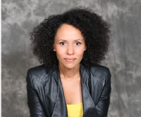
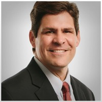

Columbia University
79 people whose festival biography mentions Columbia University. A mention can mean a job, a past job, a grant, a broadcast or an award: read the bio for which.


 Nina AlvarezPanelist · 3 editions, 2021–2026
Nina AlvarezPanelist · 3 editions, 2021–2026
 Simon KilmurryModerator, panelist, filmmaker · 3 editions, 2016–2025International Documentary Association
Simon KilmurryModerator, panelist, filmmaker · 3 editions, 2016–2025International Documentary Association Judith MatloffPanelist, workshop leader · 3 editions, 2017–2024Columbia Graduate School of Journalism
Judith MatloffPanelist, workshop leader · 3 editions, 2017–2024Columbia Graduate School of Journalism
 Juliana Schatz PrestonPanelist, filmmaker · 2 editions, 2019–2021
Juliana Schatz PrestonPanelist, filmmaker · 2 editions, 2019–2021


 Lynne AdrineModerator · 2024
Lynne AdrineModerator · 2024
Tetiana Anderson2021 Victoria BaranetskyPanelist · 2021
Victoria BaranetskyPanelist · 2021- Sabrina BuchwalterPanelist · 2015

 Alex ClarkPanelist · 2023
Alex ClarkPanelist · 2023
 Sheila S. CoronelPanelist · 2021
Sheila S. CoronelPanelist · 2021 Letrell CrittendenPanelist · 2021
Letrell CrittendenPanelist · 2021 Rajvi DesaiPanelist · 2022
Rajvi DesaiPanelist · 2022 Lance DixonPanelist · 2021
Lance DixonPanelist · 2021- Matt DrangePanelist · 2026
- Catrin EinhornPanelist · 2020
 Antonio Méndez EsparzaFilmmaker, panelist · 2021
Antonio Méndez EsparzaFilmmaker, panelist · 2021- Eleanor Bell FoxWorkshop leader · 2017
 Jen GatienFilmmaker, panelist · 2024
Jen GatienFilmmaker, panelist · 2024- Lori E. GoldFestival team · 2015
 Molly JahnFilm subject · 2022
Molly JahnFilm subject · 2022- Steve JamesFilmmaker · 2016
 Sarah JenksFilmmaker · 2021
Sarah JenksFilmmaker · 2021
 Brendan McInerneyPanelist · 2022
Brendan McInerneyPanelist · 2022 Lizzie MulveyFilmmaker · 2021
Lizzie MulveyFilmmaker · 2021 Beth MurphyPanelist · 2021
Beth MurphyPanelist · 2021- Diana NeilleFilmmaker · 2020
 Mark ObenhausFilmmaker, panelist · 2025
Mark ObenhausFilmmaker, panelist · 2025 Jennifer PrestonPanelist · 2021
Jennifer PrestonPanelist · 2021- Larissa RhodesPanelist · 2020
 Talia RosenPanelist · 2021
Talia RosenPanelist · 2021 Julian RubinsteinPanelist · 2023
Julian RubinsteinPanelist · 2023 Claudio Sanchez2021
Claudio Sanchez2021
 Charles M. SennottPanelist · 2021
Charles M. SennottPanelist · 2021 Ian ShapiraModerator · 2025
Ian ShapiraModerator · 2025 Richard Jean SoPanelist · 2021
Richard Jean SoPanelist · 2021 Duy Linh TuPanelist · 2021
Duy Linh TuPanelist · 2021- Jill Wine-BanksFilm subject · 2018
- Chi-hui YangPanelist · 2021